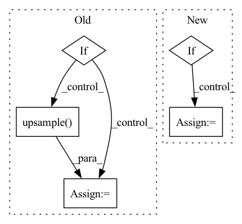

Pattern ID :13278
Before Change
self.activation = FusedLeakyReLU(out_channels)
def forward(self, x, style, noise=None):
if self.upsample:
x = self.upsample( x)
x = self.conv(x, style)
if not noise:After Change
def forward(self, x, y):
for module in self.block:
if isinstance(module, ModulatedConv2d):
x = module(x, y)
else:
x = module(x)
return x
In pattern: SUPERPATTERN
Frequency: 3
Non-data size: 5
Instances Fragment ID: 44788109
Project Name: stomoya/animeface
Commit Name: b3652bae109c713da926d5532eb014b02135da52
Time: 2020-12-14
Author: blackie0110@gmail.com
File Name: implementations/StyleGAN2/model.py
M Class Name: StyleBlock
N Class Name: StyleBlock
M Method Name: forward(3)
N Method Name: forward(4)
M Parent Class: nn.Module
N Parent Class: nn.Module
M File Name: implementations/StyleGAN2/model.py
N File Name: implementations/StyleGAN2/model.py
M Start Line: 207
M End Line: 220
N Start Line: 173
N End Line: 179
Before Change
idx = 1
pred = pred[idx]
if "align" in config.MODEL.NAME:
pred = F.upsample(input=pred,
size=(size[-2], size[-1]),
mode="bilinear", align_corners=True)
else:
pred = F.upsample(input=pred,
size=(size[-2], size[-1]),
mode="bilinear") After Change
flip_img = image.numpy()[:, :, :, ::-1]
flip_output = model(torch.from_numpy(flip_img.copy()))
if config.MODEL.NUM_OUTPUTS > 1:
flip_output = flip_output[config.TEST.OUTPUT_INDEX]
flip_output = F.interpolate(
input=flip_output, size=size[-2:], Fragment ID: 44788097
Project Name: chenjun2hao/ddrnet.pytorch
Commit Name: 3ce340bc520946fb220e83075f6e015bbe87cfe5
Time: 2019-12-12
Author: hsfzxjy@gmail.com
File Name: lib/datasets/lip.py
M Class Name: LIP
N Class Name: LIP
M Method Name: inference(5)
N Method Name: inference(5)
M Parent Class: BaseDataset
N Parent Class: BaseDataset
M File Name: lib/datasets/lip.py
N File Name: lib/datasets/lip.py
M Start Line: 120
M End Line: 155
N Start Line: 123
N End Line: 141
Before Change
def forward(self, score, target):
ph, pw = score.size(2), score.size(3)
h, w = target.size(1), target.size(2)
if ph != h or pw != w:
score = F.upsample(
input=score, size=(h, w), mode="bilinear")
loss = self.criterion(score, target)
return lossAfter Change
def forward(self, score, target):
if config.MODEL.NUM_OUTPUTS == 1:
score = [score]
weights = config.LOSS.BALANCE_WEIGHTS
assert len(weights) == len(score) Fragment ID: 44788113
Project Name: chenjun2hao/ddrnet.pytorch
Commit Name: 3ce340bc520946fb220e83075f6e015bbe87cfe5
Time: 2019-12-12
Author: hsfzxjy@gmail.com
File Name: lib/core/criterion.py
M Class Name: CrossEntropy
N Class Name: CrossEntropy
M Method Name: forward(3)
N Method Name: forward(3)
M Parent Class: nn.Module
N Parent Class: nn.Module
M File Name: lib/core/criterion.py
N File Name: lib/core/criterion.py
M Start Line: 20
M End Line: 28
N Start Line: 36
N End Line: 42